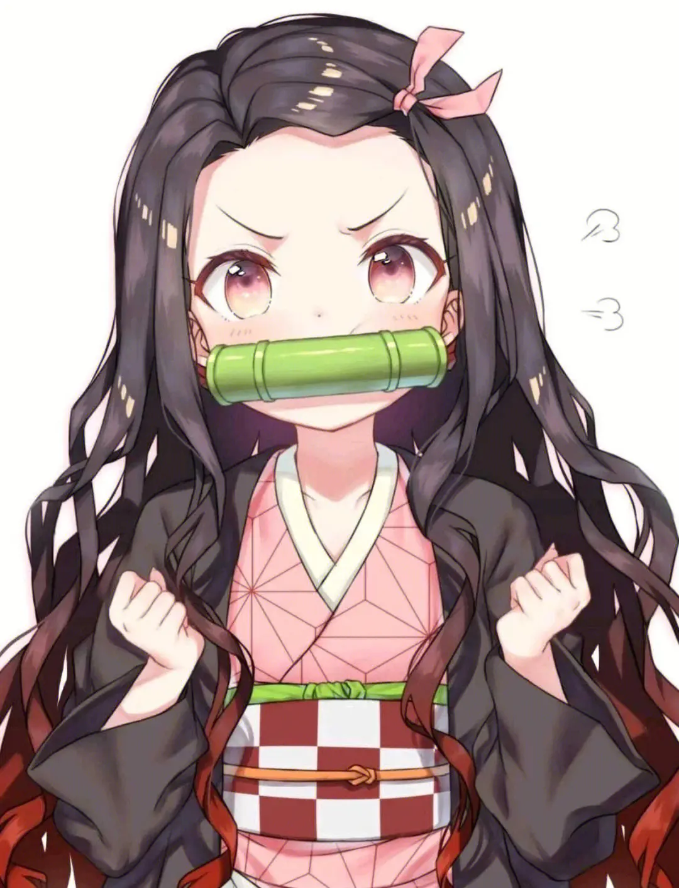
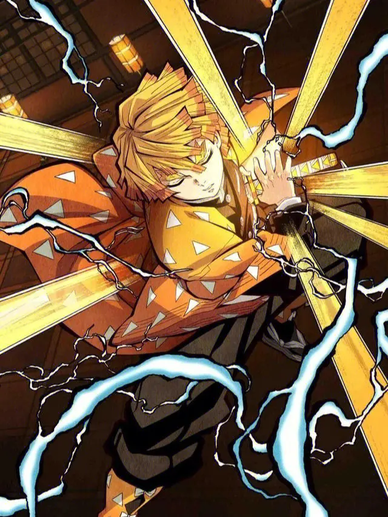
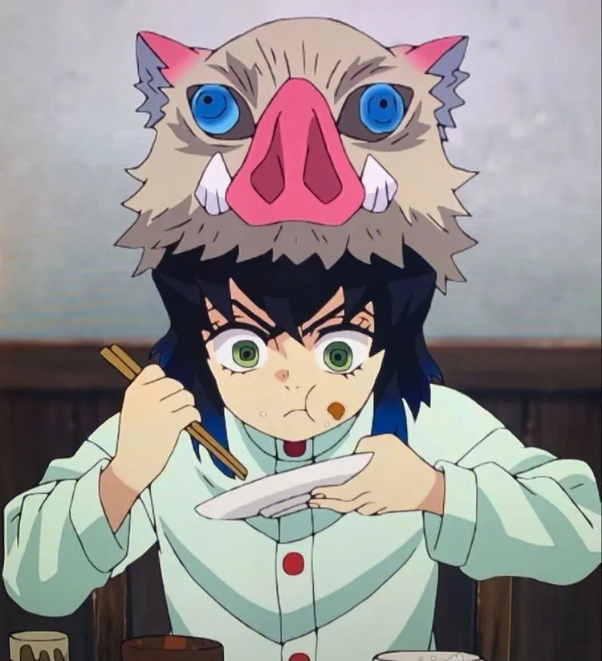
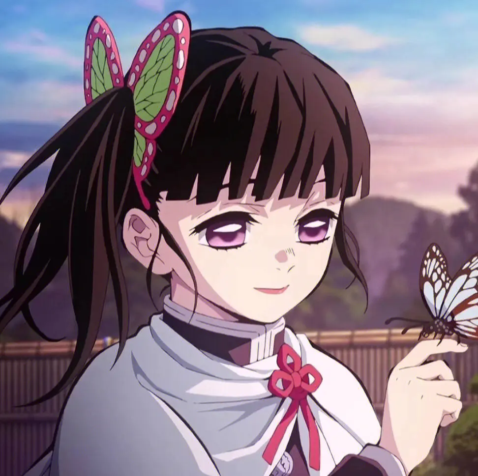

灶门碳治郎
呼吸流派：水之呼吸、火之神神乐（日之呼吸）
本作男主角，鬼杀队剑士。15岁，善良温柔的少年，重视家人，个性认真顽固有担当的长男。有着独特的敏锐嗅觉，能从气味中分辨人的情感，亦能分辨人与鬼经过训练后甚至能在战斗时辨别出对手弱点的气味“隙之线”，后获得了可以看透一切的透明的世界。全力砍杀害人的鬼，但对曾是人类的鬼的空虚与悲哀有着理解与怜悯。
人物介绍
-

-

灶门祢豆子
血鬼术：爆血
本作女主角，炭治郎的妹妹。14岁，家人被鬼袭击后的唯一生还者，因鬼舞辻无惨的血而变成了鬼。变成鬼后一度袭击哥哥炭治郎，但被他唤醒了尚存的感情，压制住了吃人本能保护了炭治郎。在鬼中是特别的存在，沉睡了两年，以睡眠取代吃人的饥饿感。以自力摆脱了鬼舞辻无惨的咒缚。因鳞泷的暗示，把人类视作自己已经死去的家人，绝不会进行加害。此后，跟随成为剑士的炭治郎一起战斗。能自由操控身体变大变小。讨厌日光，白天都会变小藏身在箱子内。 -

我妻善逸
呼吸流派：雷之呼吸
16岁，炭治郎同期的鬼杀队剑士。消极的胆怯少年，雷之呼吸传人之一。只掌握了雷之呼吸·壹之型（共有6种招式）。对自己作为剑士的实力完全没有自信，紧张到极限时会昏睡进入半觉醒状态，发挥本来的强大实力。有着过人的听觉，能从声音读取人的情感，亦能分辨人与鬼。对女孩子相当着迷，甚至对身为鬼的祢豆子也一见钟情；但由于总是过于纠缠，因此常常被女孩子厌恶。平时总是懦弱自私的要求身边的人保护自己，危急之时却会主动挺身保护小孩子和朋友的重要之物，是个温柔的好人。 -

嘴平伊之助
呼吸流派：兽之呼吸
15岁，炭治郎同期的鬼杀队剑士。赤裸着上身，戴着野猪头的双刀流少年，浑身肌肉却长着一张女孩子般精致漂亮的脸蛋。好战不服输，举止粗暴不擅长思考，依靠直觉而行动，自创了兽之呼吸。过去独自一人在山中生活，唯一爱好是和野兽比力气，因此缺乏常识，对人的温情感到困扰、难以理解，随着和伙伴的相处伊之助也逐渐变得开始重视身边的伙伴们。有着过人的才能，没有培育师指导，藤袭山最终选拔时通过抢夺鬼杀队队员的刀斩鬼入队。 -

栗花落香奈乎
呼吸流派：花之呼吸
16岁，炭治郎同期的鬼杀队剑士，虫柱·蝴蝶忍的继子。才能出众，沉默寡言，没有上级指示时喜欢通过抛硬币来做决断，后因炭治郎敞开心扉，被其打破抛硬币做决定的自我约束，与炭治郎约定遵从自己的内心而活。对炭治郎有好感。童年时受到父母虐待，为求自保而养成了沉默的性格。之后父母将其卖给了人贩子，最后在街上被蝴蝶姐妹救下。过去在香奈惠的葬礼上，因为自己哭不出来而非常自责。